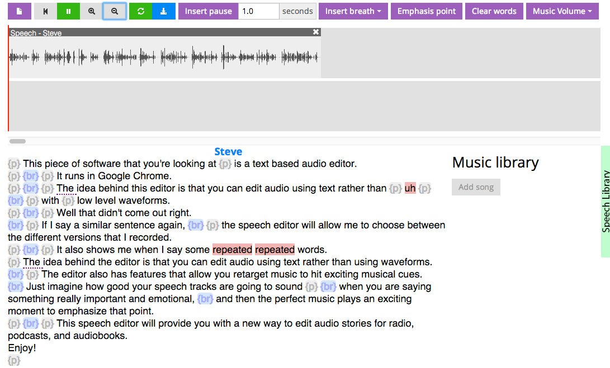
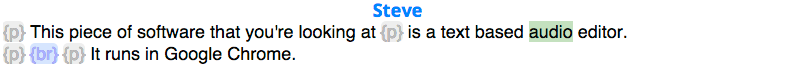
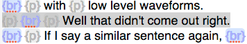
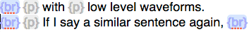
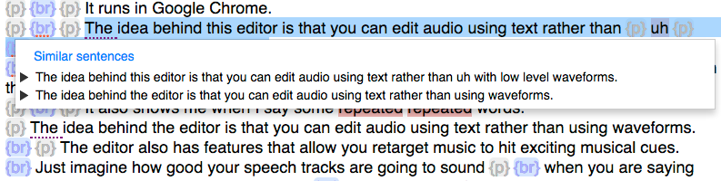
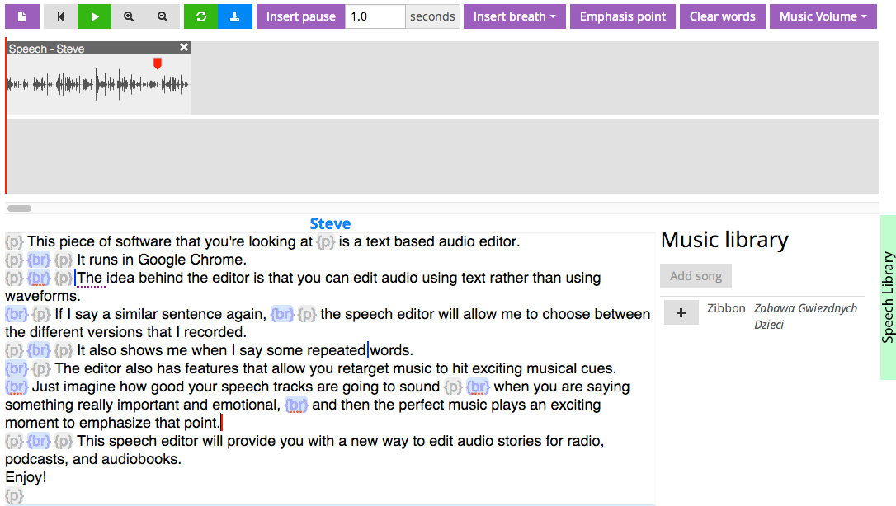
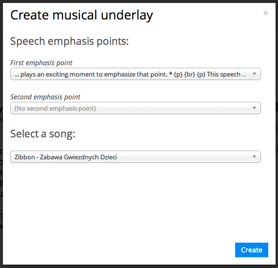

GUI text-based speech and music editor for creating radio/audio stories
Install and start the speecheditor. Go to http://localhost:5000 in Google Chrome and select speech-editor-demo from the list of tracks. You'll see the interface with the loaded audio track. The bottom left shows a transcript view, the the top shows a waveform view, and the right side holds a (currently empty) music library. The gray {p} markers represent pauses in the speech, and the blue {br} markers represent predicted breaths in the speech.

To listen to the track, press the play buttom on the top bar, or press enter. As the speech plays, the transcript view will highlight the currently-spoken text.

Clicking around to different points in the waveform view will move the playhead to that point and start playing the speech from there.
You can use the transcript view to edit the speech audio much like you would edit a text document. The speecheditor supports copy, paste, and delete text operations. For example, you can select the sentence "{p} {br} {p} Well, that didn't come out right." by clicking and dragging over it in the transcript view

And then you can delete it by pressing the delete or backspace key on your keyboard.

Now, if you press the play button again, the audio will re-render and the sentence will be gone! You can also copy and paste words and sentences within the transcript view. If you delete something and you want it back, click on the Speech Library button on the right side of the interface. This brings up a transcript of the original speech track. You can copy and paste from this library to the transcript view.
You may have noticed that I messed up a sentence and recorded it twice:
The speecheditor highlights problematic words (e.g., "uh") and repeated words in red. We could fix the first version of the sentence by deleting the "uh," but I like the delivery in the second version better. The speecheditor allows you to see and compare similar sentences. If the first word of a sentence has a purple dotted line under it, click that word to see the alternate takes of that sentence.

Clicking the play button at the beginning of one of these sentences will play that take. Once you found the take you want to use in your story, click on the sentence and it will be inserted into the transcript in place of the original sentence. I'll select the second version, which I think sounds much better.
Finally, delete the second of the two "repeated" words by clicking the cursor on the word you want to delete and pressing the delete or backspace key. Notice that the speecheditor performs deletions by word, not by letter like a typical text editor. You can also delete the second occurence of the sentence, "The idea behind the editor is that you can edit audio using text rather than using waveforms."
The speecheditor has a few tools to facilitate adding music to audio stories. Here, I'll demonstrate adding a musical underlay. A musical underlay is where an exciting moment in music plays solo right after the speaker has said something important, emotional, or exciting. The music emphasizes the speech.
First, we'll add a music track. Click the "Add song" button in the music library. Select an mp3 from your computer. I selected "Zabawa Gwiezdnych Dzieci" by Zibbon, which I downloaded on Jamendo, a site for royalty free music. Then, click "Upload." This will upload and analyze the song you selected- this process can take a few minutes.
Next, we'll select the point in the speech that we want to emphasize. In this demo speech, I want to emphasize the speech right after I say "exciting moment to emphasize that point." Click on the word "point" and click the Emphasis point button on the top toolbar. You can also type the letter "e" to add an emphasis point. After you do this, you'll see a red marker in the speech waveform and a red line in the transcript view that indicate the location of the speech emphasis point.

Now, click on the red emphasis point marker in the waveform view, or type the letter "u"-- this brings up the "Create musical underlay" modal dialog. Select the emphasis point you created as the First emphasis point and leave the second emphasis point blank so it says (No second emphasis point). Also, select the song you want to use in the Select a song dropdown. Then click "Create."

This will give us our final product, which you can see and listen to in this video:
You can also use the speecheditor to loop sections of music and to create a musical underlay that emphasizes two points in speech instead of just one.